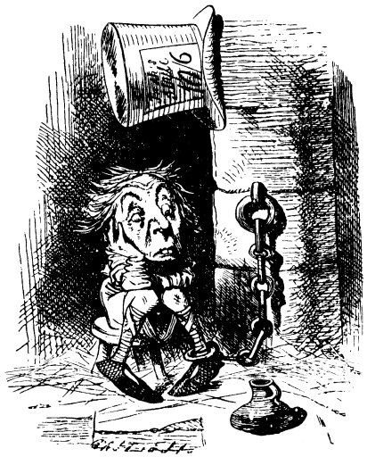

HOWEVER, the egg only got larger and larger, and more and more human: when she had come within a few yards of it, she saw that it had eyes and a nose and mouth; and when she had come close to it, she saw clearly that it was HUMPTY DUMPTY himself. "It can't be anybody else! she said to herself. "I'm as certain of it, as if his name was written all over his face!"
It might have been written a hundred times, easily, on that enormous face. Humpty Dumpty was sitting with his legs crossed, like a Turk, on the top of a high wall--such a narrow one that Alice quite wondered how he could keep his balanceand, as his eyes were steadily fixed in the opposite direction, and he didn't take the least notice of her, she thought he must be a stuffed figure.
"And how exactly like an egg he is!" she said aloud, standing with her hands ready to catch him, for she was every moment expecting him to fall.
"It's very provoking," Humpty Dumpty said after a long silence, looking away from Alice as he spoke, "to be called an egg--very!"
"I said you looked like an egg, Sir," Alice gently explained. "And some eggs are very pretty, you know," she added, hoping to turn her remark into a sort of compliment.
"Some people," said Humpty Dumpty, looking away from her as usual, "have no more sense than a baby!"
Alice didn't know what to say to this: it wasn't at all like conversation, she thought, as he never said anything to her; in fact, his last remark was evidently addressed to a tree--so she stood and softly repeated to herself:---
Humpty Dumpty sat on a wall: Humpty Dumpty had a great fall. All the king's horses and all the king's men Couldn't put Humpty Dumpty in his place again.
"That last line is much too long for the poetry," she added, almost out loud, forgetting that Humpty Dumpty would hear her.
"Don't stand chattering to yourself like that," Humpty Dumpty said, looking at her for the first time, "but tell me your name and your business."
"My name is Alice, but---"
"It's a stupid name enough!" Humpty Dumpty interrupted impatiently. "What does it mean?"
"Must a name mean something?" Alice asked doubtfully.
"Of course it must," Humpty Dumpty said with a short laugh: my name means the shape I am and a good handsome shape it is, too. With a name like yours, you might be any shape, almost."
"Why do you sit out here all alone?" said"Alice, not wishing to begin an argument.
"Why, because there's nobody with me!" cried Humpty Dumpty. "Did you think I didn't know the answer to that? Ask another."
"Don't you think you'd be safer down on the ground?" Alice went on, not with any idea of making another riddle, but simply in her good-natured anxiety for the queer creature. "That wall is so very narrow!"
"What tremendously easy riddles you ask!" Humpty Dumpty growled out. "Of course I don't think so! Why, if ever I did fall off--which there's no chance of--but if did---" Here he pursed up his lips, and looked so solemn and grand that Alice could hardly help laughing.

"If I did fall," he went on, the King has promised me--ah, you may turn pale, if you like! You didn't think I was going to say that, did you? The king has promised me--with his own mouth--to--to---"
"To send all his horses and all his men," Alice interrupted, rather unwisely.
"Now I declare that's too bad!" Humpty Dumpty cried, breaking into a sudden passion. "You've been listening at doors--and behind trees
"I haven't, indeed!" Alice said very gently. "It's in a book."
"Ah well! They may write such things in a book," Humpty Dumpty said in a calmer tone. "That's what you call a History of England, that is Now, take a good look at me! I'm one that has spoken to a King, I am: mayhap you'll never see such another: and to show you I'm not proud, you may shake hands with me!" And he grinned almost from ear to ear, as he leant forwards (and as nearly as possible fell off the wall in doing so) and offered Alice his hand. She watched him a little anxiously as she took it. "If he smiled much more, the ends of his mouth might meet behind," she thought: "and then I don't know what would happen to his head! I'm afraid it would come off!"
"Yes, all his horses and all his men," Humpty Dumpty went on. "They'd pick me up again in a minute, they would! However, this conversation is going on a little too fast: let's go back to the last remark but one."
"I'm afraid I can't quite remember it," Alice said very politely.
"In that case we may start afresh," said Humpty Dumpty, "and it's my turn to choose a subject---" ("He talks about it just as if it was a game!" thought Alice.) "So here's a question for you. How old did you say you were?
Alice made a short calculation, and said, "Seven years and six months.'
"Wrong!" Humpty Dumpty exclaimed triumphantly. "You never said a word like it."
"I thought you meant "How old are you?' " Alice explained.
"If I'd meant that, I'd have said it," said Humpty Dumpty.
Alice didn't want to begin another argument, so she said nothing.
"Seven years and six months!" Humpty Dumpty repeated thoughtfully. "An uncomfortable sort of age. Now if you'd asked my advice, I'd have said, "Leave off at seven--but it's too late now."
"I never ask advice about growing," Alice said indignantly.
"Too proud?" the other enquired.
Alice felt even more indignant at this suggestion. "I mean," she said, "that one can't help growing older."
"One can't, perhaps," said Humpty Dumpty, "but two can. With proper assistance, you might have left off at seven."
"What a beautiful belt you've got on!" Alice suddenly remarked. (They had had quite enough of the subject of age, she thought: and if they were really to take turns in choosing subjects, it was her turn now). "At least," she corrected herself on second thoughts, "a beautiful cravat, I should have said--no, a belt, I mean--oh, I beg your pardon!" she added in dismay, for Humpty Dumpty looked thoroughly offended, and she began to wish she hadn't chosen that subject. "If only I knew," she thought to herself, "which was neck and which was waist!"
Evidently Humpty Dumpty was very angry, though he said nothing for a minute or two. When he did speak again, it was in a deep growl.
"It is a--most--provoking--thing," he said at last, "when a person doesn't know a cravat from a belt!"
"I know it's very ignorant of me," Alice replied in so humble a tone that Humpty Dumpty relented.
"It's a cravat, child, and a beautiful one, as you say. It's a present from the White King and Queen. There now!"
"Is it really?" said Alice, quite pleased to find she had chosen a good subject, after all.
"They gave it me," Humpty Dumpty continued thoughtfully, as he crossed one knee over the other and clasped his hands round it, "--for an un-birthday present."
"I beg your pardon?" Alice said with a puzzled air.
"I'm not offended," said Humpty Dumpty.
"I mean, what is an un-birthday present?"
"A present given when it isn't your birthday, of course.
Alice considered a little. "I like birthday presents best," she said at last.
"You don't know what you're talking about!" cried Humpty Dumpty. "How many days are there in a year?"
"Three hundred and sixty-five," said Alice.
"And how many birthdays have you?"
"One."
"And if you take one from three hundred and sixty-five, what remains ?"
"Three hundred and sixty-four, of course."
Humpty Dumpty looked doubtfuly. "I'd rather see that done on paper," he said.
Alice couldn't help smiling as she took out her memorandum-book, and worked the sum for him:
365 --- 1 --- 364
Humpty Dumpty took the book, and looked at it very carefully. "That seems to be done right---" he began.
"You're holding it upside down!" Alice interrupted.
"To be sure I was!" Humpty Dumpty said gaily, as she turned it round for him. "I thought it looked a little queer. As I was saying, that seems to be done right--though I haven't time to look it over thoroughly just now--and that shows that there are three hundred and sixty-four days when you get un-birthday presents---"
"Certainly," said Alice.
"And only one for birthday presents, you know, There's glory for you!"
"I don't know what you mean by `glory,' " Alice said.
Humpty Dumpty smiled contemptuously. "Of course you don't--till I tell you. I meant "there's a nice knock-down argument for you!"
"But `glory' doesn't mean "a nice knock-down argument," Alice objected.
"When I use a word," Humpty Dumpty said in a rather a scornful tone, "it means just what I choose it to mean--neither more nor less.
"The question is," said Alice, "whether you can make words mean different things."
"The question is," said Humpty Dumpty, "which is to be master--that's all."
Alice was too much puzzled to say anything, so after a minute Humpty Dumpty began again. "They've a temper, some of them--particularly verbs, they're the proudest--adjectives you can do anything with, but not verbs--however, I can manage the whole lot! Impenetrability! That's what I say!"
"Would you tell me, please," said Alice, "what that means ?"
"Now you talk like a reasonable child," said Humpty Dumpty, looking very much pleased. "I meant by "impenetrability' that we've had enough of that subject, and it would be just as well if you'd mention what you meant to do next, as I suppose you don't intend to stop here all the rest of your life."
"That's a great deal to make one word mean," Alice said in a thoughtful tone.
"When I make a word do a lot of work like that," said Humpty Dumpty, "I always pay it extra."
"Oh!" said Alice. She was too much puzzled to make any other remark.
"Ah, you should see 'em come round me of a Saturday night," Humpty Dumpty went on, wagging his head gravely from side to side: "for to get their wages, you know."
(Alice didn't venture to ask what he paid them with; and so you see I can't tell you.)
"You seem very clever at explaining words, Sir," "said Alice. "Would you kindly tell me the meaning of the poem called `Jabberwocky'?"
"Let's hear it," said Humpty Dumpty. "I can explain all the poems that ever were invented--and a good many that haven't been invented just yet.'
This sounded very hopeful, so Alice repeated the first verse:---
'Twas brillig, and the slithy toves Did gyre and gimble in the wabe; All mimsy were the borogoves, And the mome raths outgrabe.
"That's enough to begin with," Humpty Dumpty interrupted: "there are plenty of hard words there, `Brillig' means four o'clock in the afternoon--the time when you begin broiling things for dinner."
"That'll do very well," said Alice: "and `slithy'?"
"Well, `slithy' means `lithe and slimy.' `Lithe' is the same as `active.' You see it's like a portmanteau--there are two meanings packed up into one word."
"I see it now," Alice remarked thoughtfully: "and what are toves?
"Well, `toves' are something like badgers they're something like lizards--and they're something like corkscrews."
"They must be very curious-looking creatures."
"They are that," said Humpty Dumpty: "also they make their nests under sun-dials--also they live on cheese."
"And what's to `gyre' and to `gymble'?"
"To `gyre' is to go round and round like a gyroscope. To `gimble' is to make holes like a gimlet."
"And `the wabe' is the grass plot round a sundial, I suppose?" said Alice, surprised at her own ingenuity.
"Of course it is. It's called `wabe,' you know because it goes a long way before it, and a long way behind it---"
"And a long way beyond it on each side," Alice added.
"Exactly so. Well, the `mimsy' is `flimsy and miserable' (there's another portmanteau for you). And a `borogove' is a thin shabby-looking bird with its feathers sticking out all round--something like a live mop."
"And then `mome raths'?" said Alice. "If I'm not giving you too much trouble."
"Well, a `rath' is a sort of green pig: but "mome' I'm not certain about. I think it's short for "from home'--meaning that they'd lost their way, you
"And what does `outgrabe' mean?"
"Well, `outgribing' is something between bellowing and whistling, with a kind of sneeze in the middle: however, you'll hear it done, maybe--down in the wood yonder--and when you've once heard it you'll be quite content. Who's been repeating all that hard stuff to you?"
"I read it in a book," said Alice. "But I had some poetry repeated to me, much easier than that, byTweedledee, I think."
"As to poetry, you know," said Humpty Dumpty, stretching out one of his great hands, "I can repeat poetry as well as other folk if it comes to that---"
"Oh, it needn't come to that!" Alice hastily said,
"The piece I'm going to repeat," he went on without noticing her remark, "was written entirely for your amusement."
Alice felt that in that case she really ought to listen to it, so she sat down, and said "Thank you" rather sadly.
In winter when the fields are white, I sing this song for your delight---
only I don't sing it," he added, as an explaination.
"I see you don't," said Alice.
"If you can see whether I'm singing or not, you've sharper eyes than most," Humpty Dumpty remarked severely. Alice was silent.
In spring, when woods are getting green, I'll try and tell you what I'mean.
"Thank you very much," said Alice.
In summer, when the days are long, Perhaps you'll understand the song: In autumn, when the leaves are brown Take pen and ink and write it down.
"I will, if I can remember it so long," said Alice.
"You needn't go on making remarks like that," Humpty Dumpty said: "they're not sensible, and they put me out."
I sent a message to the fish: I told them `This is what I wish.' The little fishes of the sea, They sent an answer back to me. The little fishes' answer was `We cannot do it, Sir, because---'
"I'm afraid I don't quite understand," said Alice.
"It gets easier further on," Humpty Dumpty replied.
I sent to them again to say `It will be better to obey.' The fishes answered with a grin, `Why, what a temper you are in!' I told them once, I told them twice: They would not listen to advice. I took a kettle large and new, Fit for the deed I had to do. My heart went hop, my heart went thump; I filled the kettle at the pump. Then some one came to me and said, `The little fishes are in bed.' I said to him, I said it plain, `Then you must wake them up again.' I said it very loud and clear; I went and shouted in his ear.
Humpty Dumpty raised his voice almost to a scream as he repeated this verse, and Alice thought with a shudder, "I wouldn't have been the messenger for anything!"
But he was very stiff and proud; He said `You needn't shout so loud!' And he was very proud and stiff; He said, `I'd go and wake them, if---' I took a corkscrew from the shelf. I went to wake them up myself. And when I found the door was locked I pulled and pushed and kicked and knocked. And when I found the door was shut, I tried to turn the handle, but---
There was a long pause.
"Is that all?" Alice timidly asked.
"That's all," said Humpty Dumpty. "Good-bye."
This was rather sudden, Alice thought: but, after such a very strong hint that she ought to be going, she felt that it would hardly be civil to stay. So she held out her hand. "Good-bye, till we meet again!" she said as cheerfully as she could.
"I shouldn't know you again if we did meet," Humpty Dumpty replied in a discontented tone, giving her one of his fingers to shake; "you're so exactly like other people.
"The face is what one goes by, generally," Alice remarked in a thoughtful tone.
"That's just what I complain of," said Humpty Dumpty. "Your face is the same as everybody has--the two eyes, so---" (marking their places in the air with his thumb) "nose in the middle, mouth under. It's always the same. Now if you had the two eyes on the same side of the nose, for instance or the mouth at the top--that would be some help."
"It wouldn't look nice," Alice objected. But Humpty Dumpty only shut his eyes and said, "Wait till you've tried."
Alice waited a minute to see if he would speak again, but as he never opened his eyes or took any further notice of her, she said, "Good-bye!" once more, and, on getting no answer to this, she quietly walked away: but she couldn't help saying to herself as she went, "Of all the unsatisfactory---" (she repeated this aloud, as it was a great comfort to have such a long word to say) "of all the unsatisfactory people I ever met---" She never finished the sentence, for at this moment a heavy crash shook the forest from end to end.